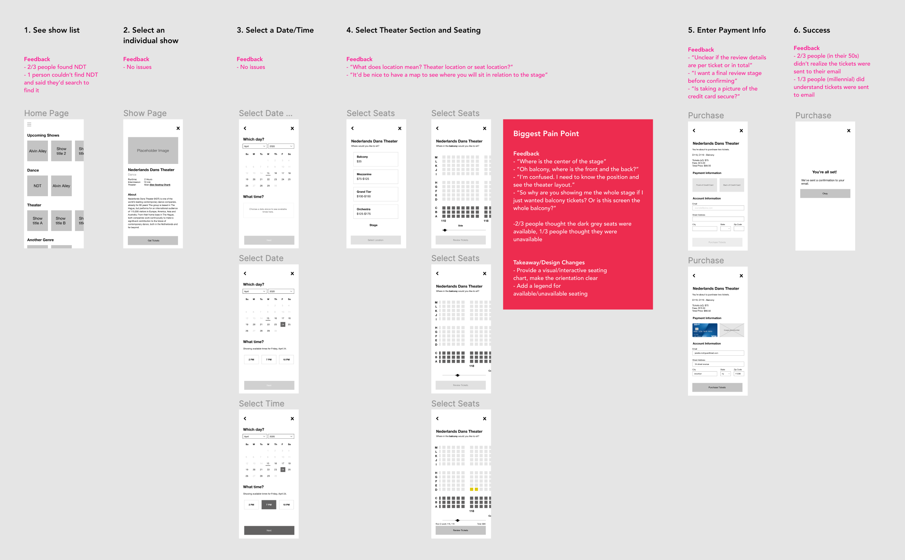

Mobile UI/UX Design
CityTix
CityTix is a passion project*. The mobile app is designed for a performing arts theater to aid in ticket sales.
I conducted field observations, created customer personas, and built multiple prototypes to better realize my vision.
*Disclaimer: This is neither part of a company nor a launched product.

Research
Understand the Customer
The first step in my process is to conduct field observations and discover where customer pain points are. These findings then lead to a set of customer personas to help drive design direction through the prototyping process.
Since New York City Center is one of Manhattan's performing arts theaters, I started my research there.

The existing customer experience was painful for several reasons.
Tessitura, the software sales reps were using to handle ticket sales, was difficult to use and prone to errors, which forced customers to repeat themselves over the phone and made it harder to follow through with a sale.

Sample screenshot of Tessitura
When customers called in, they almost always asked for tickets in this order:
- Show name
- Date
- Time
- Seating
But Tessitura's calendar view made it impossible to search for a show name first before selecting available dates and times. We had to visually scan each date to see if the show name was present in each rectangular box.

A recreated version of the calendar page NYCC staff used
After taking customer calls for a few days and interviewing some of the staff, I developed two main personas to better design an end product that catered to the customer.
Most of the incoming callers were people like Julia: elderly, loyal to New York City Centers, potential monthly donors, less familiar with the latest technology trends, more comfortable calling over the phone.
The rest of the incoming callers were people like Juan: potential students, more concerned with prices, more familiar with the latest technology trends (more likely to adopt a mobile solution), infrequent show-attenders.


Finally, many customers were on-the-go while buying tickets over the phone (e.g. getting into a cab, walking around their apartment, walking out on the streets of NYC), which often introduced loud background noises and other distractions. This key insight factored into my decision to create a mobile app, since mobile apps are perfect for on-the-go experiences.
Design
Hypothesize, Create, Test
After research, I typically jump straight into creating low-fidelity screens to get ideas out on paper, run it by a few people to validate macro-level workflow architecture, and then revise and add in more detail.
I intentionally restrain from adding too much interaction or detail in the first few versions so the customer feels more comfortable providing negative feedback, seeing a rough first draft.
Wireframes Version 1 (Low-Fidelity)
I mocked up a rough version and conducted a usability test with three people (two in their 50s and one 30 year old) to use the prototype to purchase tickets for the show "NDT" on a specific day and time. All three people were amateur show-attendees. Feedback is highlighted in pink.
Wireframes Version 2 (Medium-Fidelity)
Based on the feedback, I added in an interactive seating map, a search experience, and more details into the purchase screen.